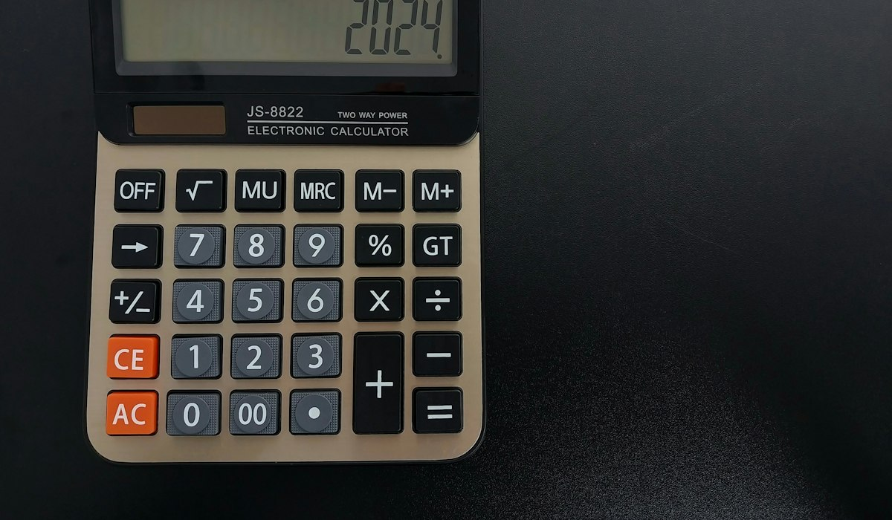

En bref
Une assurance vie prélève sur cinq lignes : les frais sur versement (0 % en ligne, 2 à 3 % en réseau), les frais de gestion annuels (0,50 % à 1,00 % sur les unités de compte), les frais courants des supports choisis (0,10 % pour un fonds indiciel à plus de 2 % pour un fonds actif), les frais d'arbitrage et les frais d'arrérages en cas de sortie en rente. Sur huit ans et 20 000 €, l'écart entre le contrat le moins cher et le plus cher du panel dépasse 1 600 €.
- Les frais de gestion du contrat s'ajoutent aux frais courants des supports : ce sont deux étages distincts, souvent confondus
- Onze contrats sur seize ne prélèvent plus rien sur les versements, les cinq autres retiennent 2 à 3 %, presque toujours négociables
- Les arbitrages sont gratuits en ligne et facturés jusqu'à 0,50 % du montant arbitré dans certains contrats de réseau
- En gestion pilotée, un troisième étage s'ajoute : le coût du mandat, de 0,20 % à 0,40 % par an
Sommaire
Les cinq lignes de frais d'un contrat
Comprendre un contrat d'assurance vie suppose de savoir où il prélève. Il y a cinq endroits, pas un.
- Les frais sur versement, retenus sur chaque euro versé. Un contrat à 3 % vous place 9 700 € quand vous en versez 10 000.
- Les frais de gestion annuels du contrat, prélevés sur l'encours, souvent différents entre le fonds en euros et les unités de compte.
- Les frais courants des supports, prélevés par la société de gestion à l'intérieur de chaque fonds, avant même que le contrat ne prélève les siens.
- Les frais d'arbitrage, facturés à chaque changement de support sur une partie des contrats.
- Les frais d'arrérages, prélevés sur chaque versement de rente si vous choisissez cette sortie.
01 Le moins coûteux1 000 € de frais sur huit ans9,2/10
Le moins coûteux1 000 € de frais sur huit ans9,2/10
02 Le meilleur rapport frais-serviceGratuité des arbitrages, gamme correcte8,8/10
Le meilleur rapport frais-serviceGratuité des arbitrages, gamme correcte8,8/10
03 Le plus accessibleMêmes frais, ouverture à 100 €8,6/10
Le plus accessibleMêmes frais, ouverture à 100 €8,6/10
Le tableau comparatif des frais
| Contrat | Note /10 | Versement | Gestion fonds € | Gestion UC | Arbitrage | Coût total sur 8 ans |
|---|---|---|---|---|---|---|
| Linxea Spirit 2Notre choix | 9,2 | 0 % | 0,50 % | 0,50 % | Gratuit | 1 000 € |
| BoursoVie | 8,8 | 0 % | 0,75 % | 0,75 % | Gratuit | 1 460 € |
| Fortuneo Vie | 8,6 | 0 % | 0,75 % | 0,75 % | Gratuit | 1 460 € |
| MACSF RES | 7,6 | 0 % | 0,80 % | 0,80 % | Gratuit | 1 550 € |
| Groupama Modulation | 7,4 | 0 à 2 % | 0,80 % | 0,80 % | 1 gratuit par an | 1 790 € |
| Gan Patrimoine | 7,1 | 0 à 3 % | 0,85 % | 0,85 % | 0,25 % | 2 080 € |
| Generali Himalia | 6,9 | 0 à 2,5 % | 0,90 % | 0,90 % | 0,30 % | 2 150 € |
| Contrat bancaire moyen | 4,6 | 2 à 3 % | 1,00 % | 1,00 % | 0,50 % | 2 650 € |
Coût total calculé sur un versement unique de 20 000 €, conservé huit ans, à rendement brut constant de 3 % par an, hors frais courants des supports. Relevé de septembre 2026 dans les conditions générales.
La colonne qui compte est la dernière. Elle ramène tout sur un même versement et une même durée, ce qui est la seule façon honnête de comparer un contrat qui prélève à l'entrée et un contrat qui prélève dans la durée.

L'étage oublié : les frais courants des supports
C'est la ligne que presque personne ne regarde, et c'est souvent la plus lourde. Un fonds actif prélève couramment 1,5 % à 2 % de frais courants par an, un fonds indiciel de 0,10 % à 0,30 %. Ces frais sont déduits de la valeur du support avant que le contrat ne prélève ses propres frais de gestion.
| Support | Frais courants | Frais du contrat | Total annuel | Sur 20 000 € pendant 8 ans |
|---|---|---|---|---|
| Fonds indiciel actions monde | 0,20 % | 0,50 % | 0,70 % | environ 1 200 € |
| Fonds actions géré activement | 1,80 % | 0,50 % | 2,30 % | environ 3 800 € |
| Fonds indiciel dans un contrat bancaire | 0,20 % | 1,00 % | 1,20 % | environ 2 050 € |
| Fonds actif dans un contrat bancaire | 1,80 % | 1,00 % | 2,80 % | environ 4 550 € |
Estimations à rendement brut constant de 5 % par an sur la poche actions, hors fiscalité. Les frais courants figurent dans le document d'informations clés de chaque support.
L'écart entre la première et la dernière ligne dépasse 3 300 € sur huit ans, pour une même exposition aux marchés actions. C'est le choix qui pèse le plus lourd dans toute la vie d'un contrat, et il se fait support par support, pas une fois pour toutes.
Trois leviers pour réduire ses frais
Négocier les frais d'entrée avant de signer
Dans les réseaux, le taux affiché est un maximum contractuel, pas un tarif. Sur un versement significatif, il tombe fréquemment à 1 % ou à zéro. C'est une conversation d'une minute qui vaut plusieurs centaines d'euros.
Choisir les supports sur leurs frais courants, à qualité égale
Entre deux fonds de la même catégorie, la différence de frais courants est un coût certain, la différence de performance une hypothèse. Le document d'informations clés du support donne le chiffre.
Limiter les arbitrages sur les contrats qui les facturent
Un arbitrage à 0,50 % sur 30 000 € coûte 150 €. Trois arbitrages par an effacent un tiers du rendement d'un fonds en euros. Sur les contrats en ligne, où l'arbitrage est gratuit, la question ne se pose pas.
Notre verdict
Linxea Spirit 2 est le contrat le moins coûteux de notre panel, avec environ 1 000 € de frais sur huit ans pour 20 000 € placés, contre 2 650 € pour le contrat bancaire moyen.
Mais le vrai levier n'est pas le contrat, ce sont les supports. Entre un fonds indiciel et un fonds géré activement de même catégorie, l'écart de frais courants dépasse ce que vous gagnerez jamais en changeant de contrat. Regardez les deux étages, dans cet ordre.
Questions fréquentes
Quels sont les frais d'une assurance vie ?
Cinq lignes : les frais sur versement, les frais de gestion annuels du contrat, les frais courants des supports choisis, les frais d'arbitrage et les frais d'arrérages en cas de sortie en rente. Seules les deux premières figurent en général sur la page commerciale.
Quelles assurances vie ont les frais de gestion les plus bas ?
Sur notre panel de septembre 2026, les contrats distribués par les courtiers en ligne affichent 0,50 % à 0,75 % de frais de gestion annuels sur les unités de compte, contre 0,90 % à 1,00 % pour les contrats bancaires classiques.
Comment réduire les frais de son assurance vie ?
Trois leviers : négocier ou éviter les frais d'entrée, choisir des supports à frais courants bas à qualité égale, et limiter les arbitrages sur les contrats qui les facturent. Les trois pèsent plus lourd que le choix du fonds en euros.
Les frais de gestion sont-ils prélevés même en cas de perte ?
Oui. Les frais de gestion sont prélevés sur l'encours, quelle que soit la performance. C'est précisément pour cela qu'ils pèsent plus lourd qu'un écart de rendement dans une comparaison de long terme.
Les frais d'entrée sont-ils négociables ?
Dans les réseaux bancaires et chez les assureurs traditionnels, presque toujours. Le taux inscrit au contrat est un maximum, le taux appliqué se discute au moment de la souscription et sur les versements importants.
Qu'est-ce que les frais courants d'un support ?
Ce sont les frais prélevés par la société de gestion à l'intérieur du fonds, avant les frais du contrat. Ils figurent dans le document d'informations clés et vont de 0,10 % pour un fonds indiciel à plus de 2 % pour un fonds géré activement.
Notre méthode
Ce comparatif repose sur des documents publics, vérifiables un par un.
- Les frais sont relevés dans les conditions générales et la note d'information de chaque contrat, pas sur la page commerciale
- Les rendements sont ceux publiés par l'assureur au titre du dernier exercice clos, nets de frais de gestion et bruts de prélèvements sociaux
- Les règles fiscales citées renvoient au code général des impôts et au code des assurances en vigueur à la date de mise à jour
- Le parcours de souscription est testé sur chaque contrat : premier versement, délai d'ouverture, délai de versement d'un rachat partiel
- Aucun assureur ne finance ce comparatif, ne nous rémunère et ne le relit avant publication. Nous ne distribuons aucun contrat
Information, pas conseil. Les chiffres publiés ici sont des relevés de marché, mis à jour à la date indiquée sous chaque tableau. Ils ne préjugent pas des performances futures et ne constituent pas une recommandation personnalisée. Les rendements des fonds en euros sont nets de frais de gestion et bruts de prélèvements sociaux, les unités de compte présentent un risque de perte en capital.